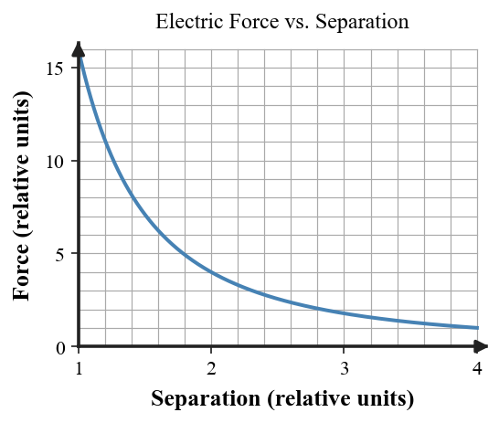

1. A sample contains the same total positive and negative charge. Describe its net charge.
2. Two small spheres both carry negative net charge. State whether their electric interaction is attraction or repulsion.
3. During rubbing, electrons leave material A and enter material B. State the final sign of each material.
4. Which property of a conductor allows excess charge to redistribute across it more readily than across an insulator?
5. Name the charging process in which a nearby charged object rearranges mobile charge without touching the conductor.
6. A neutral metal sphere is brought near a negatively charged rod. Describe how mobile electrons redistribute and explain why the sphere can be attracted while remaining neutral overall.
7. Two objects exert force $F$ at separation $r$. Without changing either charge, the separation becomes $3r$. Determine the new force in terms of $F$.
8. At fixed separation, the magnitude of one charge is doubled and the other is unchanged. Compare the new electric-force magnitude with the original.
9. Use the graph to describe how electric-force magnitude changes as separation increases. Connect the shape to the squared-distance term in Coulomb’s law.

10. A charged metal ball touches an identical neutral metal ball. Explain why contact can redistribute electrons and why total charge of the two-ball system is unchanged.
11. A student says a plastic strip becomes negative because rubbing manufactures new electrons. Diagnose the error and replace it with a charge-conservation explanation.
12. Two models explain why a charged rod attracts a neutral conductor. Model A says opposite charges are created on the near side. Model B says existing charges separate slightly. Decide which model fits conservation of charge and justify.
13. Which statement best describes a neutral object?
14. Which pair of net charges repels?
15. Which statement is consistent with conservation of charge?
16. Why does excess charge spread more easily on a metal object than on a rubber object?
17. Which process can leave a conductor charged without the charged object touching it?
18. If the separation between two charges doubles while charge amounts stay fixed, the force magnitude becomes
19. A negatively charged rod is held near a neutral metal sphere. Which explanation best accounts for attraction?
20. Which critique best addresses “rubbing creates electric charge”?